Affiliate Management Filter
The Filter screen allows you to filter the data on the Affiliate Management screen, making it easier to find the information that you’re looking for. The Filter screen can be accessed when you first enter the Affiliate Management screen, or by clicking the Filter button at any time within the Affiliate Management screen.
Selecting an Existing Filter
Once in the Filter screen, you can select an existing filter (a set of already defined search criteria) from the dropdown in the upper right corner. In the example below, a filter called “New York Stations” has been selected.
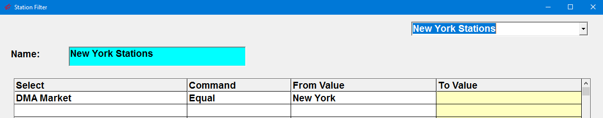
After selecting a filter, press Done on the Filter screen to proceed to the main Affiliate Management screen. The results shown will match the criteria defined on the selected filter.
You can also create and save a new filter by entering a new set of searchable criteria. Note: Each user will only be able to view the filters they create in the dropdown.
To exit the Filter screen without saving anything and return to the main Jobs screen, press the “Cancel & Exit” button.
Basic Filter Rules
The Filter feature works by filtering through a set of characteristics such as DMA Markets, Vehicles, Formats, etc., based on a set of logical operators that you select from the Command field. The operators are:
- Contains: used if you know some of the characters you are searching for, such as a first name, or partial phone number.
- Equal: used when you are looking for an exact match on a name or number.
- Not Equal: used when you want to exclude an exact match from your search results.
- Range: used when you are searching for stations that fall between certain parameters, such as all stations with DMA Rankings between 1 and 25 (or top 25).
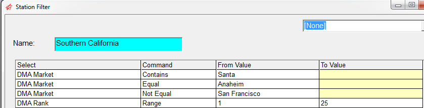
Above is an example of a created filter. Stations that would be included in this search would be stations where the DMA Markets contain the letters “Santa” (such as Santa Barbara), had an exact match on the name “Anaheim,” excluding the “San Francisco” market, and had a DMA ranking between 1 and 25.
If more than one value or qualifier of the same characteristic is listed in a filter, the system treats them as an “or” condition, meaning any of the criteria may be true to be included in the output. For example, if you enter:
- DMA Market equal New York
- DMA Market equal Los Angeles
- DMA Market equal Chicago
You will get a list of stations that are in any of the three markets.
If multiple different characteristics are listed, they will be treated as an “and” condition, meaning all of the criteria must be true to be included in the output. For example, if you enter:
- DMA Market equal New York
- Power is greater than (range from) 25,000 watts
You will get any stations that are in New York and also have power greater than 25,000 watts.
You can see how many stations appear using the selected filter by viewing the count of stations shown in the upper left corner of the Affiliate Management screen.
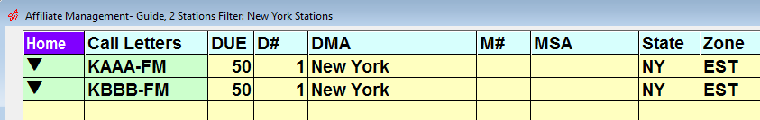
Creating New Filter Criteria
To create a new filter:
Type in a name for the filter in the name field, then click in the “Select” field and choose a characteristic, such as DMA Market, Call Letters, etc., to filter on.
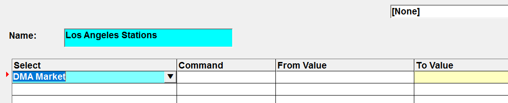
Tab to the Command field, and select the logical operator to use, then select the “From Value” to match on.
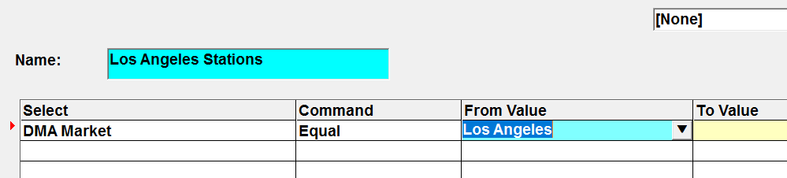
For example, this filter is for finding stations with a DMA of Los Angeles. To do this, the DMA Market was selected from the “Select” field, the “Equal” operator was chosen from the “Command” field, and “Los Angeles” was entered as the “From Value”. This will filter the results to only show stations with a DMA set to Los Angeles.
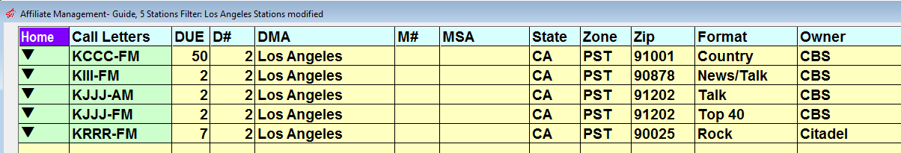
Press Save to save a filter for future use. Press Done to view the Affiliate Management screen with the filtered results. (Pressing the Clear button will clear the entered filter criteria.)
Additional Filter Information
Not Equal Operator
The “Not Equal” operator can be used to exclude stations from the results. For example, to create a filter that excludes stations with a Talk format, choose “Format” from the “Select” field, choose “Not Equal” from the Command field, and select the “Talk” format from the “From Value” field. The results will exclude any station set to the Talk format.
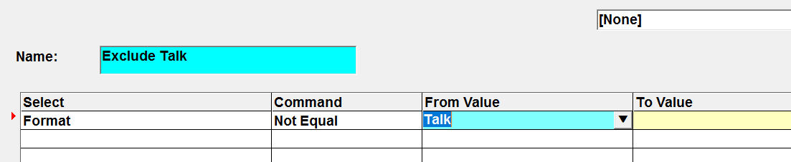
Range Operator
The Range operator can be used to find stations that meet a range of values for a single criteria. For example, to find stations in the top ten markets, select “DMA Rank” as the “Select” value, select “Range” from the “Command” field, then enter a “From Value” of 1 and a “To Value” of 10.
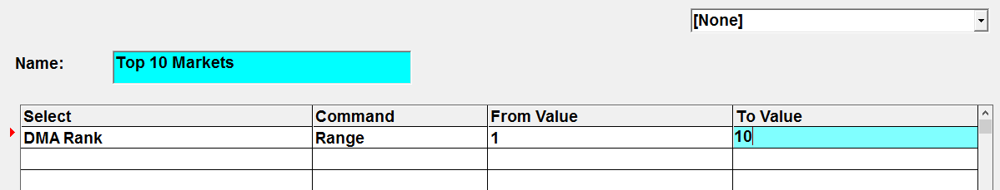
Using Multiple Criteria
You can create filters that use several criteria. The example below filters on stations in the top ten DMA Rank, with a format of News/Talk, and that are multicast.
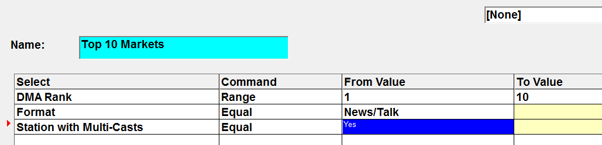
Affidavits Due
Use the “Affidavits Due” selection to filter the results to show stations that have a number of affidavit weeks overdue equal to or greater than (up to 52) the value entered on the filter screen. Only those stations whose worst affidavit overdue count (per vehicle) equals or exceeds the number entered will be shown. Note that for each station shown, all vehicles will be shown, even if only one equals or exceeds the entered number.
The example below will filter the results to show stations that have at least one affiliated vehicle with ten or more outstanding affidavits.
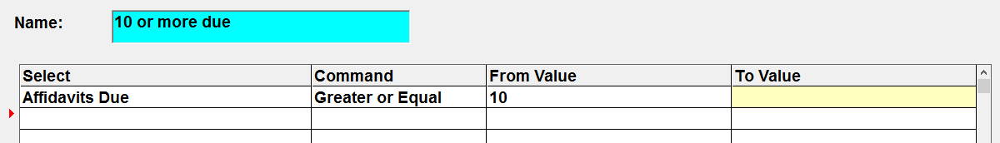
Filter for a user’s stations
Another way to use filters is to create a filter for yourself that only includes those stations/properties that you are responsible for. In the example below, the user is responsible for three vehicles, so only stations affiliated with those three vehicles are shown.
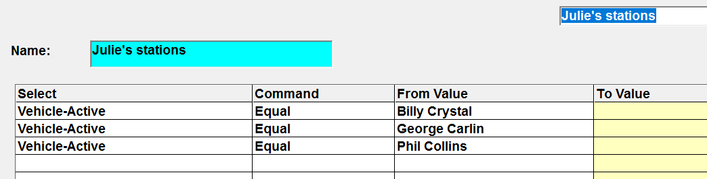
Service Agreements
The available options are as follows:
- Service Agreements = Only: only stations that have at least one agreement defined as a service agreement will be included in the filtered station list results.
- Service Agreements = None: only stations that have no service agreements will be included in the filtered station list results.
- Service Agreements = Both: stations that have service agreements and that don’t have service agreements will be included.
Other Values
The filter criteria can be used to help find missing information. For example, if you received a kickback email that couldn’t be received, but aren’t sure what station it’s for, you could search for the station by selecting the “Email address” selection and entering the email address in the “From value”, as shown in the example below.
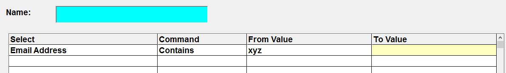
Filtered Results
When viewing the filtered results on the Affiliate Management screen, only those stations that fit the parameters of the filter will appear. To clarify what filtered (if any) information you are viewing on the Affiliate Management Screen, the filter name will appear in the upper left corner, along with a count of the number of stations shown. If the filter was not saved or not given a name, the word “custom” will be shown instead of the name. A modified but unsaved filter will show the word “modified” next to the filter name.
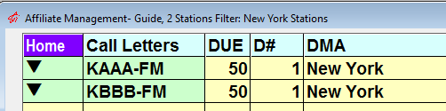
When viewing a filtered selection of stations, you can toggle the filter on or off by clicking the blue On/Off toggle near the bottom of the screen. You can also return to the Filter screen by clicking the Filter button.
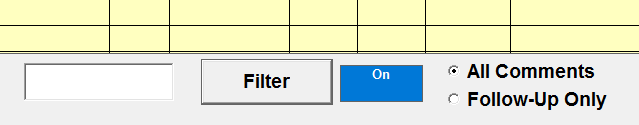
Station Filter Report
Pressing the Printer icon in the bottom right corner of the Affiliate Management screen will create a snapshot of the filtered station information on the Station Filter report. When you click on the Printer Icon, a selectivity box will appear with additional options for the report.